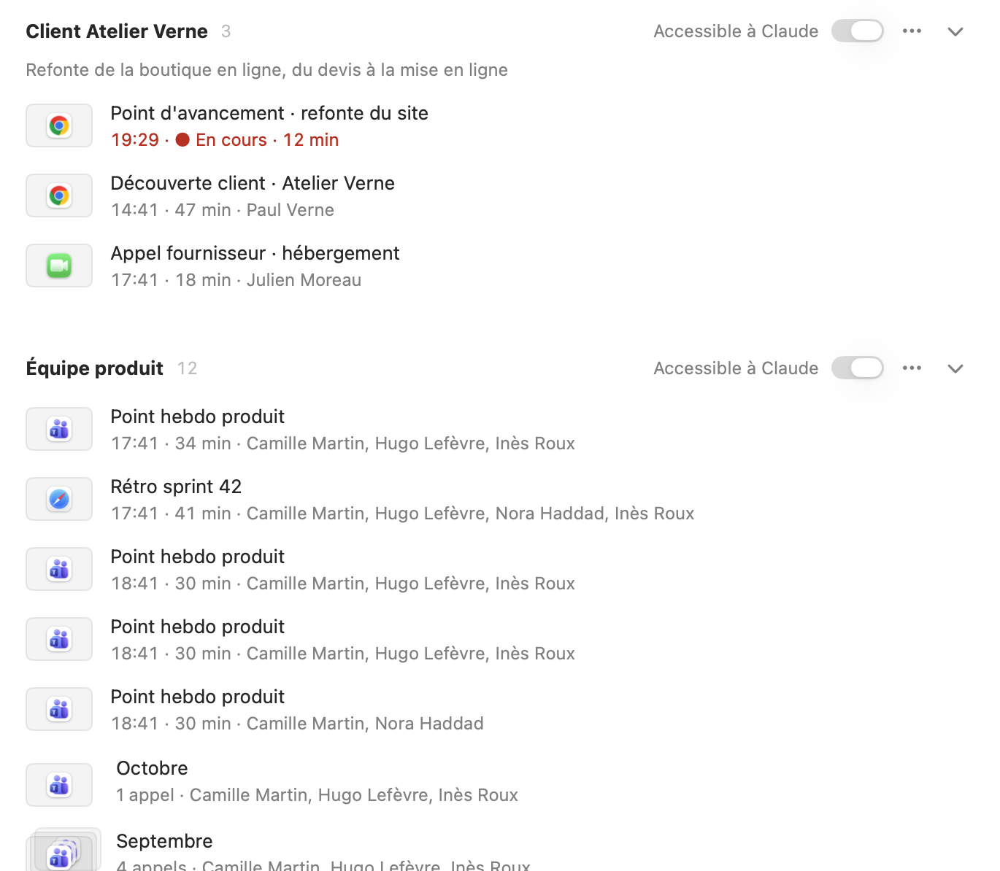
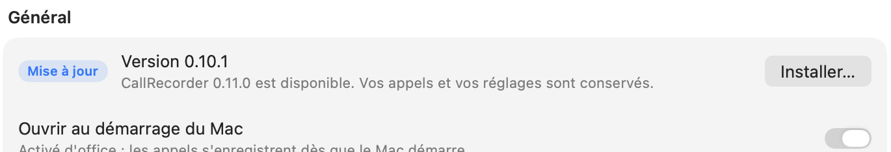
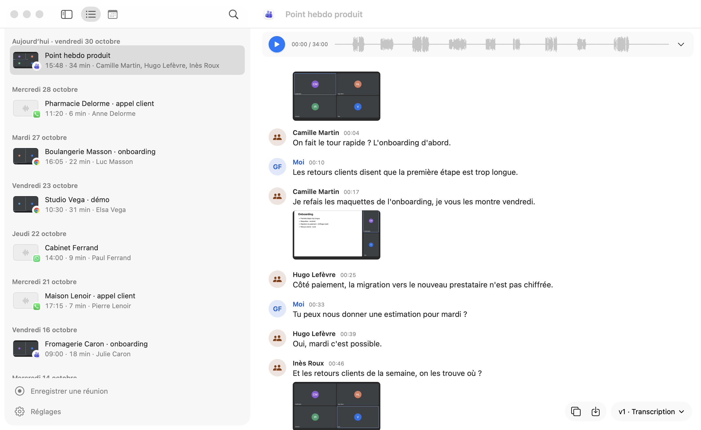
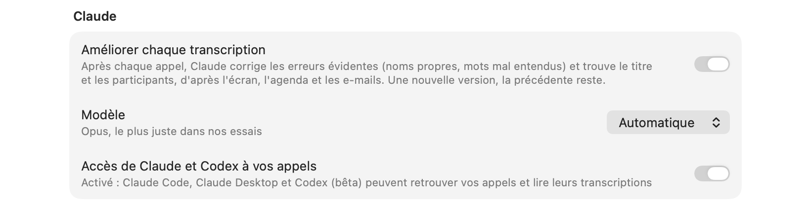
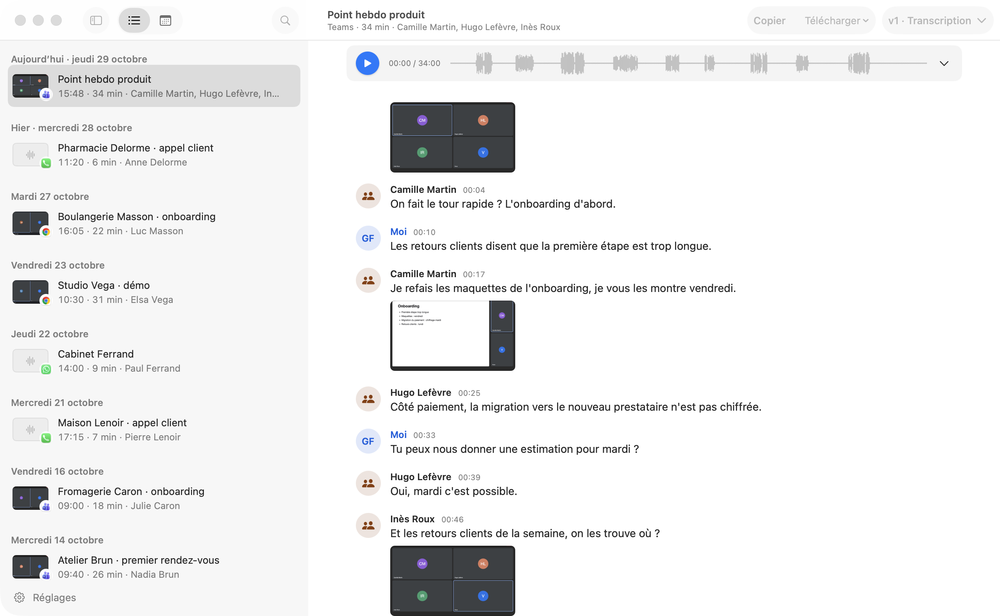
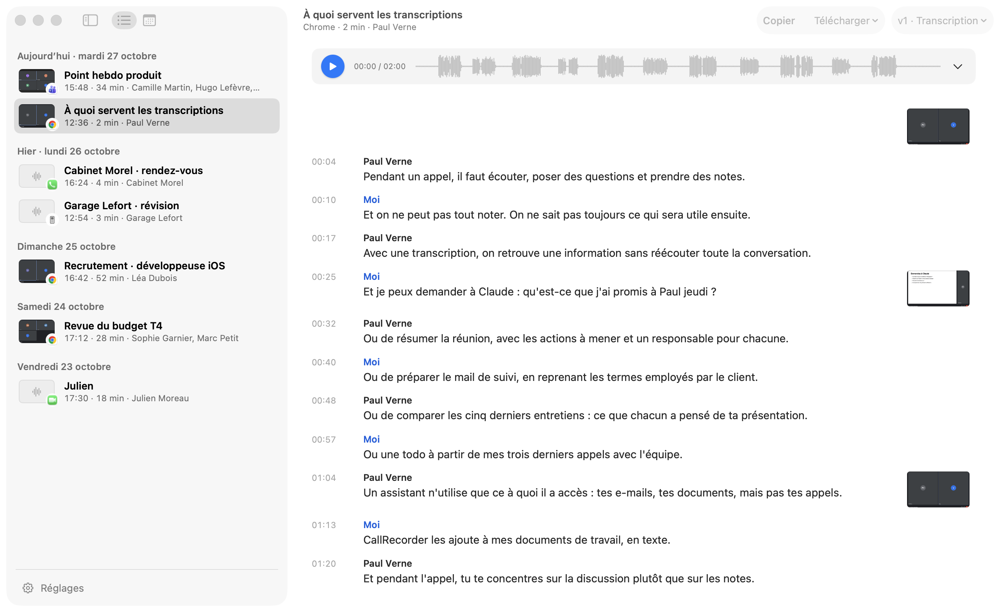
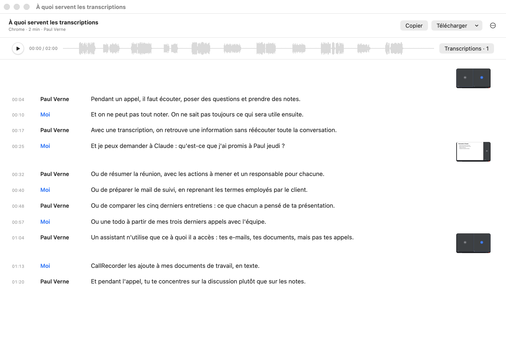
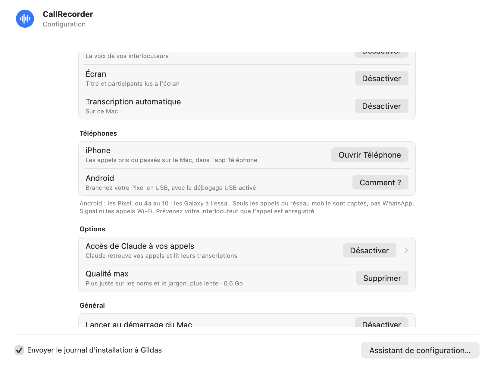
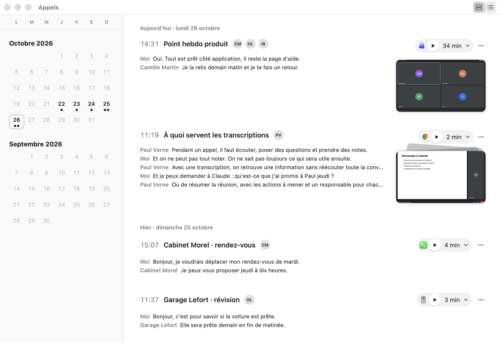

Versions
CallRecorder vous propose chaque nouvelle version. Pour vérifier vous-même : Réglages › Général › Rechercher une mise à jour.
Surlignez un passage d'une transcription : créez-en une note, envoyez-le à Claude avec son contexte, ou corrigez-le sur place (l'attribuer à une autre personne, comparer les versions). Le lecteur ne joue alors que ce passage. Les notes tirées d'un appel rejoignent vos notes, avec l'appel d'où elles viennent ; filtrez-les par appel. Les pistes peuvent s'afficher séparément, chacune qu'on coupe à l'écoute. L'icône retrouve celle d'avant.

Claude range chaque appel dans le bon groupe, en suivant le sous-titre de vos groupes ; un groupe gardé hors des IA ne lui est jamais montré. Les groupes montrent leurs 5 derniers appels, les plus anciens en piles par mois, et se replient d'un clic. Notes dictées avec fn + D. Icônes revues, dont celle de l'app ; Télécharger devient Exporter. Un enregistrement raté ne tourne plus sans fin, et une piste muette ne bloque plus la transcription.


Copiez vos appels dans Google Drive, iCloud Drive ou un autre dossier, tous ou seulement certains groupes : Réglages › Outils et intégrations › Autres outils. Claude ou ChatGPT avec leur connecteur Google Drive, Zapier ou un script les y retrouvent, avec un index et un mode d'emploi. Les groupes gardés hors des IA ne sont jamais copiés.

Les mises à jour se trouvent maintenant dans Réglages › Général : la version installée, Rechercher une mise à jour, et Installer… quand une nouvelle version attend. Une étiquette « Mise à jour » au bout du bouton Réglages le signale.


En réunion, chaque voix a désormais son nom et sa couleur : « Voix 1 », « Voix 2 »… CallRecorder les distingue selon l'endroit d'où vient le son. Vos appels peuvent aussi vivre dans le dossier de votre choix, Google Drive ou iCloud par exemple : Réglages › Général › Dossier des appels › Changer…



Codex reçoit l'accès à vos appels comme Claude, sans rien régler. C'est une bêta : si vous l'utilisez, dites-moi ce qui coince. L'installation se fait désormais par le Terminal, en trois étapes guidées. En cas d'échec, l'installation dit en français quoi faire.


La liste des appels flotte dans un panneau de verre, comme la barre latérale de Finder sur macOS 26. Le titre de l'appel, précédé du logo de son app ou de son site, se coupe quand la fenêtre rétrécit. Copier, Télécharger et les versions de la transcription flottent en bas à droite, sur le texte. Icônes plus grandes et survols plus nets.

Groupes : rangez vos appels dans Réglages › Groupes, filtrez la recherche par groupe, et gardez un groupe hors de Claude. Fenêtre Appels repensée : la liste sous la barre d'outils, la recherche qui s'ouvre depuis la loupe (⌘F), et la liste qui se replie pour ne garder que l'appel. Réglages aux mesures de Réglages Système. Menu des versions d'une transcription plus lisible, avec la date à droite.


Corrections : la fenêtre Appels revient à l'écran si elle s'ouvrait en dehors ; les Réglages n'encombrent plus le journal du système ; après l'appel de test, une alerte prévient si votre voix ou celle de l'interlocuteur n'a pas été captée, et propose de recommencer.
Premier lancement plus simple : la fenêtre Appels s'ouvre sur les autorisations qui manquent et l'appel de test, qui se fait dans sa propre fenêtre puis devient un appel comme les autres. Transcription en fil avec avatars, l'enregistrement aligné sur le texte, chaque phrase à l'heure où elle est dite ; la relecture de Claude s'ouvre d'elle-même. Réglages resserrés. Corrections : la transcription d'Apple qui échouait juste après un appel, des exemplaires de l'app relancés en double au démarrage, l'accès de Claude Desktop perdu après une réinstallation.
Une seule fenêtre : vos appels à gauche, en liste ou en calendrier, et l'appel choisi à droite, qui s'ouvre aussitôt. Les transcriptions d'un appel dans un menu. Choisissez les apps et les sites dont les appels sont enregistrés. Des menus et des raccourcis comme dans toute app Mac : Espace pour lire, ⌘Z pour remettre un appel supprimé, les Réglages en bas à gauche de la fenêtre (⌘,). S'il manque le micro ou le son des apps, les Réglages s'ouvrent et montrent quoi autoriser. Après chaque appel, Claude peut améliorer la transcription : noms propres corrigés, titre et participants, dans une nouvelle version. Plus de qualité max : la transcription d'Apple, relue par Claude, fait aussi bien que Whisper. Plus lisible avec VoiceOver, Réduire les animations et Augmenter le contraste.


Une ligne par appel, avec sa première capture, l'app et la durée. Fenêtre de l'appel : la transcription calée sur l'enregistrement, les captures à côté des répliques, les silences visibles, un texte plus lisible. Plusieurs transcriptions par appel ; une nouvelle se prépare au centre de la fenêtre, avec les mots à reconnaître et Faire remplir par Claude, et on la regarde se faire. Nombreuses corrections.


Cartes des appels : toute la carte ouvre la fenêtre de l'appel, avec un extrait de quelques répliques. Fenêtre de l'appel : les captures dans une colonne à droite, les répliques espacées selon le temps écoulé.
Les appels Android s'enregistrent sans rien installer : l'outil scrcpy est livré dans l'app.
Appels Android : le numéro et le nom de l'interlocuteur, retrouvés même quand le téléphone est rebranché après l'appel.
Enregistre les appels de l'iPhone (app Téléphone du Mac) et des Pixel branchés en USB. Transcription rapide par la reconnaissance vocale d'Apple sur macOS 26 ; qualité max par Whisper, nourrie des mots lus à l'écran.


Nouvelle fenêtre des appels : calendrier, cartes avec l'enregistrement à écouter, les captures et un extrait de la transcription. Une fenêtre par appel, avec la transcription liée à l'enregistrement, les captures, la copie et l'export. Après 7 jours, seul l'audio part à la corbeille. Suppression d'un appel annulable pendant 5 secondes.


Fond de l'installation simplifié.

Un panneau collé à Réglages Système indique quoi faire pour chaque autorisation. Claude relancé après la connexion, assistant remis au premier plan, journal d'installation (désactivable), répliques mieux découpées.
Relance fiable après une mise à jour.
Relance fiable après l'autorisation de l'écran.
Enregistre aussi les appels Slack, Webex et Loom.
Première version publique : enregistrement automatique, transcription sur le Mac, assistant de configuration avec appel de test.